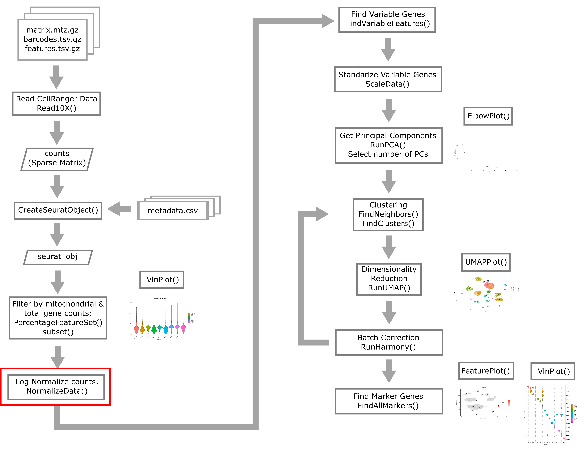
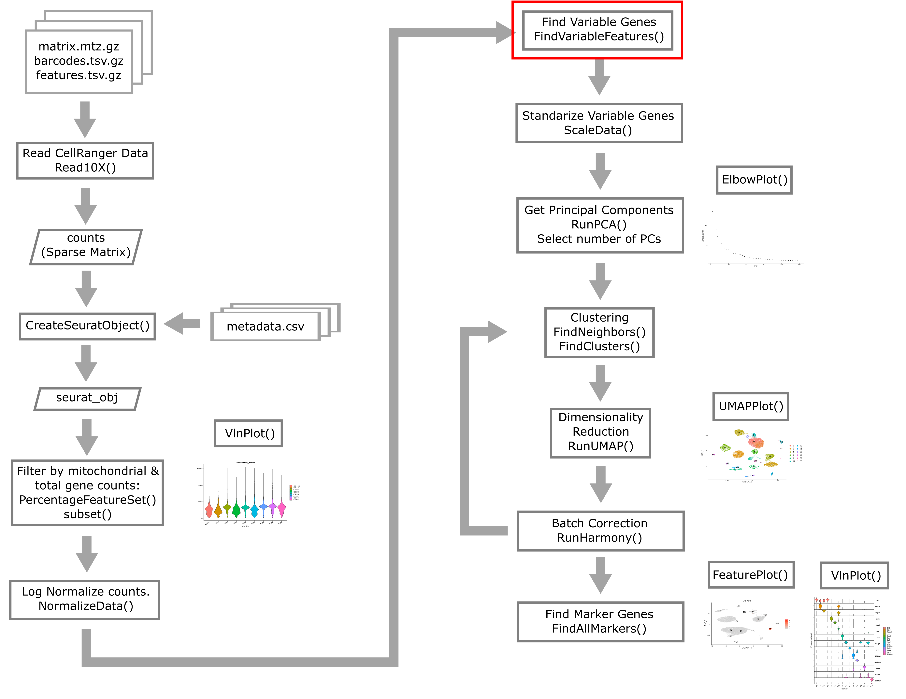
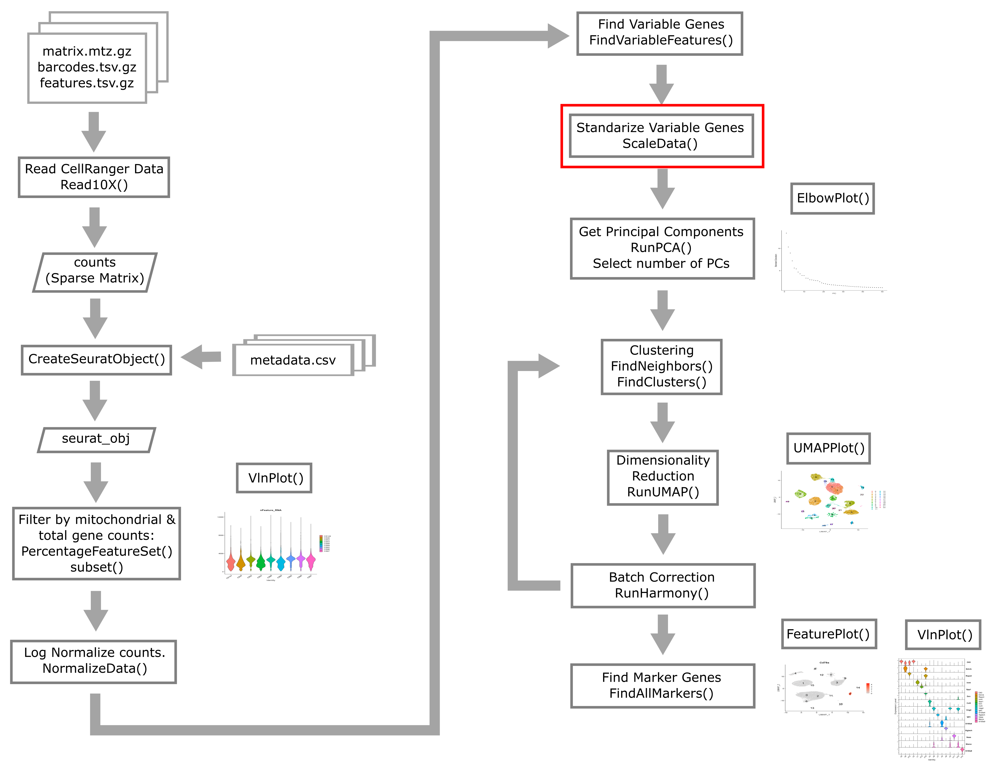
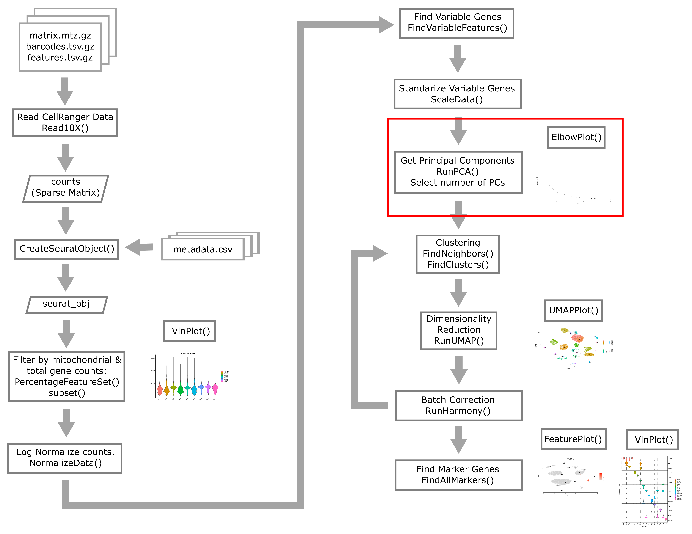
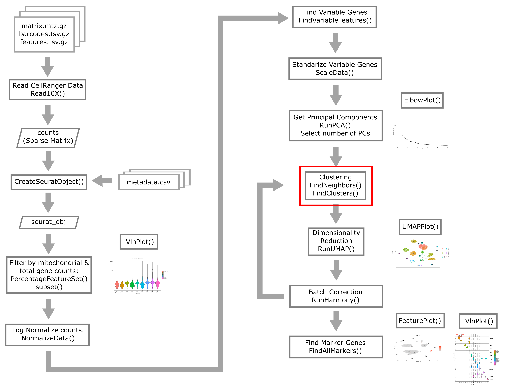
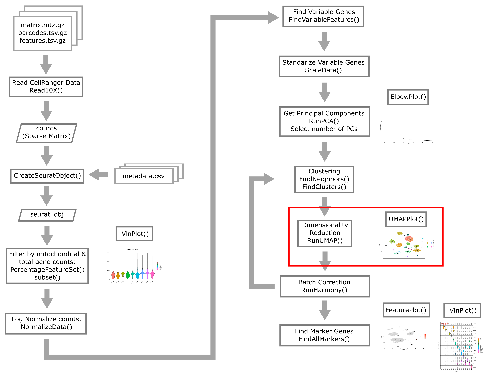

Common Analyses
Overview
Teaching: 120 min
Exercises: 10 minQuestions
What are the most common single cell RNA-Seq analyses?
Objectives
Understand the form of common Seurat commands and how to chain them together.
Learn how to normalize, find variable features, reduce dimensionality, and cluster your scRNA-Seq data.
suppressPackageStartupMessages(library(tidyverse))
suppressPackageStartupMessages(library(Seurat))
data_dir <- 'data'
# set a seed for reproducibility in case any randomness used below
set.seed(1418)
A Note on Seurat Functions
The Seurat package is set up so that we primarily work with a
Seurat object containing our single cell data and metadata.
Let’s say we are working with our Seurat object liver.
The usual way we might call a function to do something with our
data looks like:
liver <- DoSomething(liver, param1 = TRUE, param2 = 0.3)
However, since the DoSomething() function returns the modified
Seurat object, we can also pipe together multiple commands to do
multiple things to our object. That could look something like:
liver <- DoSomething(liver, param1 = TRUE, param2 = 0.3) %>%
DoSomethingElse(param1 = 3) %>%
DoAThirdThing(param1 = c(1, 4, 6))
The pipe operator passes the results of the first command as the argument to the next command.
We can just as well use the piping operator %>% even if
we are calling only one function:
liver <- liver %>%
DoSomething(param1 = TRUE, param2 = 0.3)
Recently, base R added its own pipe operator |>. This does essentially the
same operation, with different behavior only in a few somewhat rare
instances. You can read more about the differences between
%>% and |> at the
this link.
In this lesson (and elsewhere in the course) we may alternate between these slightly different coding styles. Please ask us for clarification if you are having difficulty seeing how our example code is doing what it is supposed to do.
Normalization

Instead of working with raw count data measured across cells that were sequenced to highly variable depths, we conduct normalization to try to make gene expression values follow a more stable distribution as well as being more comparable between cells.
Single cell gene expression count data is usually approximately log-normally distributed. Many statistical methods work best when the data is normally distributed. We also would like to correct for variability in sequencing depth between cells, the nature of which is purely technical. Log normalization will give us normalized gene expression which represents the log of the number of counts per 10,000 reads.
liver <- liver %>%
NormalizeData(normalization.method = "LogNormalize")
This method of normalizing is pretty simple. The way it works is
to follow a simple formula like
norm_count = log((count + 1)/total_counts) * 10000
where total_counts is the total number of reads in each cell.
There are other normalization methods that are more complicated and may outperform the log normalization method. Two examples are:
- Normalization based on multinomial methods as outlined by Townes et al. 2019
- Normalization using regularized negative binomial regression Hafemeister and Satija 2019, with a Seurat vignette here
However, no normalization method has been demonstrated to be universally and unambiguously better than simple log normalization.
Challenge 1
Where is the log-normaliztion stored? Try using the str() command to look at the structure of the liver object (i.e. str(liver)).
Solution to Challenge 1
str(liver) Formal class ‘Seurat’ [package “SeuratObject”] with 13 slots ..@ assays :List of 1 … … … ..@ commands :List of 1 .. ..$ NormalizeData.RNA:Formal class ‘SeuratCommand’ [package “SeuratObject”] with 5 slots .. .. .. ..@ name : chr “NormalizeData.RNA” .. .. .. ..@ time.stamp : POSIXct[1:1], format: “2023-09-12 09:43:16” .. .. .. ..@ assay.used : chr “RNA” .. .. .. ..@ call.string: chr “NormalizeData(., normalization.method = "LogNormalize")” .. .. .. ..@ params :List of 5 .. .. .. .. ..$ assay : chr “RNA” .. .. .. .. ..$ normalization.method: chr “LogNormalize” .. .. .. .. ..$ scale.factor : num 10000 .. .. .. .. ..$ margin : num 1 .. .. .. .. ..$ verbose : logi TRUE ..@ tools : list()
This is a lot to absorb! Look for a line containing “@ commands” toward the bottom of the object which you printed out. Notice that the next line says “NomalizeData”. Further down, you can see a line which says “$ normalization.method: chr “LogNormalize”. This is the line which tells you that the liver object has stored the log-normalized information.
Finding Variable Features

Next we will find a subset of features showing high cell-to-cell variation in the dataset (that is, they are highly expressed in some cells and lowly expressed in others).
liver <- liver %>%
FindVariableFeatures(nfeatures = 2000)
# Identify the 25 most highly variable genes
top25 <- head(VariableFeatures(liver), 25)
plot1 <- VariableFeaturePlot(liver)
LabelPoints(plot = plot1, points = top25, xnudge = 0,
ynudge = 0, repel = TRUE)
plot of chunk var_features
Once again, let’s look at the Seurat liver object and see how it stores the variable genes.
str(liver)
Formal class 'Seurat' [package "SeuratObject"] with 13 slots
..@ assays :List of 1
.. ..$ RNA:Formal class 'Assay5' [package "SeuratObject"] with 8 slots
.. .. .. ..@ layers :List of 2
.. .. .. .. ..$ counts:Formal class 'dgCMatrix' [package "Matrix"] with 6 slots
.. .. .. .. .. .. ..@ i : int [1:103377764] 10 14 28 30 32 49 52 53 56 67 ...
.. .. .. .. .. .. ..@ p : int [1:44254] 0 3264 6449 9729 13445 16988 20052 23140 26417 29561 ...
.. .. .. .. .. .. ..@ Dim : int [1:2] 20120 44253
.. .. .. .. .. .. ..@ Dimnames:List of 2
.. .. .. .. .. .. .. ..$ : NULL
.. .. .. .. .. .. .. ..$ : NULL
.. .. .. .. .. .. ..@ x : num [1:103377764] 1 1 1 2 1 6 1 1 2 1 ...
.. .. .. .. .. .. ..@ factors : list()
.. .. .. .. ..$ data :Formal class 'dgCMatrix' [package "Matrix"] with 6 slots
.. .. .. .. .. .. ..@ i : int [1:103377764] 10 14 28 30 32 49 52 53 56 67 ...
.. .. .. .. .. .. ..@ p : int [1:44254] 0 3264 6449 9729 13445 16988 20052 23140 26417 29561 ...
.. .. .. .. .. .. ..@ Dim : int [1:2] 20120 44253
.. .. .. .. .. .. ..@ Dimnames:List of 2
.. .. .. .. .. .. .. ..$ : NULL
.. .. .. .. .. .. .. ..$ : NULL
.. .. .. .. .. .. ..@ x : num [1:103377764] 0.779 0.779 0.779 1.212 0.779 ...
.. .. .. .. .. .. ..@ factors : list()
.. .. .. ..@ cells :Formal class 'LogMap' [package "SeuratObject"] with 1 slot
.. .. .. .. .. ..@ .Data: logi [1:44253, 1:2] TRUE TRUE TRUE TRUE TRUE TRUE ...
.. .. .. .. .. .. ..- attr(*, "dimnames")=List of 2
.. .. .. .. .. .. .. ..$ : chr [1:44253] "AAACGAATCCACTTCG-2" "AAAGGTACAGGAAGTC-2" "AACTTCTGTCATGGCC-2" "AATGGCTCAACGGTAG-2" ...
.. .. .. .. .. .. .. ..$ : chr [1:2] "counts" "data"
.. .. .. .. .. ..$ dim : int [1:2] 44253 2
.. .. .. .. .. ..$ dimnames:List of 2
.. .. .. .. .. .. ..$ : chr [1:44253] "AAACGAATCCACTTCG-2" "AAAGGTACAGGAAGTC-2" "AACTTCTGTCATGGCC-2" "AATGGCTCAACGGTAG-2" ...
.. .. .. .. .. .. ..$ : chr [1:2] "counts" "data"
.. .. .. ..@ features :Formal class 'LogMap' [package "SeuratObject"] with 1 slot
.. .. .. .. .. ..@ .Data: logi [1:20120, 1:2] TRUE TRUE TRUE TRUE TRUE TRUE ...
.. .. .. .. .. .. ..- attr(*, "dimnames")=List of 2
.. .. .. .. .. .. .. ..$ : chr [1:20120] "Xkr4" "Rp1" "Sox17" "Mrpl15" ...
.. .. .. .. .. .. .. ..$ : chr [1:2] "counts" "data"
.. .. .. .. .. ..$ dim : int [1:2] 20120 2
.. .. .. .. .. ..$ dimnames:List of 2
.. .. .. .. .. .. ..$ : chr [1:20120] "Xkr4" "Rp1" "Sox17" "Mrpl15" ...
.. .. .. .. .. .. ..$ : chr [1:2] "counts" "data"
.. .. .. ..@ default : int 1
.. .. .. ..@ assay.orig: chr(0)
.. .. .. ..@ meta.data :'data.frame': 20120 obs. of 8 variables:
.. .. .. .. ..$ vf_vst_counts_mean : num [1:20120] 0.000136 0.000429 0.295528 0.547918 0.447337 ...
.. .. .. .. ..$ vf_vst_counts_variance : num [1:20120] 0.000136 0.001062 0.749957 0.900155 0.549817 ...
.. .. .. .. ..$ vf_vst_counts_variance.expected : num [1:20120] 0.000142 0.000476 0.412618 0.907597 0.689343 ...
.. .. .. .. ..$ vf_vst_counts_variance.standardized: num [1:20120] 0.955 2.045 1.818 0.992 0.798 ...
.. .. .. .. ..$ vf_vst_counts_variable : logi [1:20120] FALSE TRUE TRUE FALSE FALSE FALSE ...
.. .. .. .. ..$ vf_vst_counts_rank : int [1:20120] NA 999 1228 NA NA NA NA NA NA 1428 ...
.. .. .. .. ..$ var.features : chr [1:20120] NA "Rp1" "Sox17" NA ...
.. .. .. .. ..$ var.features.rank : int [1:20120] NA 999 1228 NA NA NA NA NA NA 1428 ...
.. .. .. ..@ misc : Named list()
.. .. .. ..@ key : chr "rna_"
..@ meta.data :'data.frame': 44253 obs. of 11 variables:
.. ..$ orig.ident : Factor w/ 1 level "liver: scRNA-Seq": 1 1 1 1 1 1 1 1 1 1 ...
.. ..$ nCount_RNA : num [1:44253] 8476 8150 8139 10083 9517 ...
.. ..$ nFeature_RNA: int [1:44253] 3264 3185 3280 3716 3543 3064 3088 3277 3144 3511 ...
.. ..$ sample : chr [1:44253] "CS48" "CS48" "CS48" "CS48" ...
.. ..$ digest : chr [1:44253] "inVivo" "inVivo" "inVivo" "inVivo" ...
.. ..$ typeSample : chr [1:44253] "scRnaSeq" "scRnaSeq" "scRnaSeq" "scRnaSeq" ...
.. ..$ cxds_score : num [1:44253] NA NA NA NA NA NA NA NA NA NA ...
.. ..$ bcds_score : num [1:44253] NA NA NA NA NA NA NA NA NA NA ...
.. ..$ hybrid_score: num [1:44253] NA NA NA NA NA NA NA NA NA NA ...
.. ..$ percent.mt : num [1:44253] 3.04 5.35 4.67 4.75 3.89 ...
.. ..$ keep : logi [1:44253] TRUE TRUE TRUE TRUE TRUE TRUE ...
..@ active.assay: chr "RNA"
..@ active.ident: Factor w/ 1 level "liver: scRNA-Seq": 1 1 1 1 1 1 1 1 1 1 ...
.. ..- attr(*, "names")= chr [1:44253] "AAACGAATCCACTTCG-2" "AAAGGTACAGGAAGTC-2" "AACTTCTGTCATGGCC-2" "AATGGCTCAACGGTAG-2" ...
..@ graphs : list()
..@ neighbors : list()
..@ reductions : list()
..@ images : list()
..@ project.name: chr "liver: scRNA-Seq"
..@ misc : list()
..@ version :Classes 'package_version', 'numeric_version' hidden list of 1
.. ..$ : int [1:3] 5 0 2
..@ commands :List of 2
.. ..$ NormalizeData.RNA :Formal class 'SeuratCommand' [package "SeuratObject"] with 5 slots
.. .. .. ..@ name : chr "NormalizeData.RNA"
.. .. .. ..@ time.stamp : POSIXct[1:1], format: "2024-10-15 21:26:18"
.. .. .. ..@ assay.used : chr "RNA"
.. .. .. ..@ call.string: chr "NormalizeData(., normalization.method = \"LogNormalize\")"
.. .. .. ..@ params :List of 5
.. .. .. .. ..$ assay : chr "RNA"
.. .. .. .. ..$ normalization.method: chr "LogNormalize"
.. .. .. .. ..$ scale.factor : num 10000
.. .. .. .. ..$ margin : num 1
.. .. .. .. ..$ verbose : logi TRUE
.. ..$ FindVariableFeatures.RNA:Formal class 'SeuratCommand' [package "SeuratObject"] with 5 slots
.. .. .. ..@ name : chr "FindVariableFeatures.RNA"
.. .. .. ..@ time.stamp : POSIXct[1:1], format: "2024-10-15 21:26:28"
.. .. .. ..@ assay.used : chr "RNA"
.. .. .. ..@ call.string: chr "FindVariableFeatures(., nfeatures = 2000)"
.. .. .. ..@ params :List of 12
.. .. .. .. ..$ assay : chr "RNA"
.. .. .. .. ..$ selection.method : chr "vst"
.. .. .. .. ..$ loess.span : num 0.3
.. .. .. .. ..$ clip.max : chr "auto"
.. .. .. .. ..$ mean.function :function (mat, display_progress)
.. .. .. .. ..$ dispersion.function:function (mat, display_progress)
.. .. .. .. ..$ num.bin : num 20
.. .. .. .. ..$ binning.method : chr "equal_width"
.. .. .. .. ..$ nfeatures : num 2000
.. .. .. .. ..$ mean.cutoff : num [1:2] 0.1 8
.. .. .. .. ..$ dispersion.cutoff : num [1:2] 1 Inf
.. .. .. .. ..$ verbose : logi TRUE
..@ tools : list()
Look in the “@ commands” section. You will notice that there are now two items in the liver of commands. “$ NormalizeData.RNA” is the first item and “indVariableFeatures.RNA” is the second one. This is where the the information about the variable genes is stored. You can see this in the line which says:
’’’ @ call.string: chr “FindVariableFeatures(., nfeatures = 2000) ‘’’
Cell Cycle Assignment
We will also show how to predict cell cycle state. This approach is outlined in the Seurat vignette at this link.
cc.genes <- readLines(file.path(data_dir,
'regev_lab_cell_cycle_genes_mm.fixed.txt'))
s.genes <- cc.genes[1:43]
g2m.genes <- cc.genes[44:98]
liver <- CellCycleScoring(liver,
s.features = s.genes,
g2m.features = g2m.genes,
set.ident = FALSE)
Seurat will provide a quantitative estimate of the cell’s chance of being
in different phases of the cell cycle S.Score and G2M.Score, as well as
a categorical prediction of which phase the cell is in
(Phase – G1, G2M, S).
Scale Data

Now we apply a linear transformation that is often used in initial scRNA-Seq processing. This transformation standardizes the expression of each gene, setting the mean across cells to 0 and variance to 1. This helps all genes to contribute to the inferred variability rather than just the highly-expressed genes.
We will “regress out” the signals of technical confounders including %MT and the number of genes expressed. We might also choose to regress out other variables such as cell cycle stage (if we wish to examine cellular heterogeneity independent of cell cycle), number of UMIs, etc.
liver <- liver %>%
ScaleData(vars.to.regress = c("percent.mt", "nFeature_RNA"))
Principal Component Analysis (PCA)

Next we reduce the dimensionality of the data. You have probably heard of PCA as a technique for summarizing major axes of variation in a dataset.
Here is a brief tutorial if PCA is new to you.
Here, we perform PCA on the single cell gene expression data in order to place each cell in a multidimensional space with lower dimension (say 20-40) than the complete expression matrix (~20,000 genes).
liver <- liver %>%
RunPCA(verbose = FALSE, npcs = 100)
It is usually not very useful to view the raw PCs themselves. There’s nothing obvious that we can glean from the following PC plot:
DimPlot(liver, reduction = "pca")
plot of chunk pcplot
Instead we will take some of the PCs and use them for a further summarization of the data. Namely, we will use the PCs as input to the UMAP (or t-SNE) algorithm which projects our cells onto a 2D space (the computer screen).
A significant challenge in scRNA-Seq is deciding how many PCs to use. You can think of each PC as capturing pathway-level transcriptional variation across the cells in your dataset. Thus even if the transcriptome is sparse within each cell (it is), you can still compare different cells across major axes of variation. We don’t want to use too few PCs, otherwise we might miss significant axes of variation (e.g. a cell subtype or minor cell type). We also don’t want to use too many PCs since, as you go out in PC-space, the PCs increasingly represent more noise and less biological reality.
We will use a very simple method to choose the number of PCs: the elbow method. Using this method we look for where the elbow plot stops dropping precipitously.
ElbowPlot(liver, ndims = 100)
plot of chunk elbow
Let’s zoom in more and see what things like under 50 PCs.
ElbowPlot(liver, ndims = 50)
plot of chunk elbow2
We would say that the standard deviation in PCs really starts to stablize around N = 24 PCs. Let’s use this value moving forward. For a more in-depth analysis we would try a variety of values and attempt to decide which value gives us the results that are most biologically sensible.
There is also a function in Seurat, JackStraw(), that one may use
to try to determine the statistical significance of principal
component scores. Specifically, it randomly permutes a subset of data,
and calculates projected PCA scores for these random genes. Then it
compares the PCA scores for the random genes with the observed PCA scores
to determine statistical signifance. We are not using this function here
because it is a bit slow and because it often does not give any better
results than the simple method of looking at an elbow plot.
All this said, the major question here – how many PCs to select in order to capture the important variation within your scRNA-Seq data in a reduced dimension space – is still unresolved and your best bet is to explore different values and see what they give you!
num_pc <- 24
ElbowPlot(liver, ndims = 40) + geom_vline(xintercept = num_pc)
plot of chunk elbow3
Clustering

Seurat uses a graph-based approach to cluster cells with similar transcriptomic profiles. We start by constructing the shared nearest-neighbor graph. This computes a distance metric between the cells (in PC-space) and constructs the shared nearest-neighbor graph by calculating the neighborhood overlap (Jaccard index) between every cell and its 20 (by default) nearest neighbors. Then the shared nearest-neighbor graph is used to identify cell clusters using a modularity optimization based clustering algorithm. The Seurat help pages for the functions below, FindNeighbors and FindClusters, provide some references if you are interested in digging into further details of this clustering procedure.
liver <- FindNeighbors(liver, reduction = 'pca',
dims = 1:num_pc, verbose = FALSE) %>%
FindClusters(verbose = FALSE, resolution = 0.3)
Dimensionality reduction (UMAP, tSNE, etc)

As mentioned above, dimensionality reduction allows you to actually visualize your data! The two methods below are widely used in the single cell community.
Uniform Manifold Approximation and Projection (UMAP) van der Maaten & Hinton, 2008.
t-Distributed Stochastic Neighbor Embedding (t-SNE) McUnnes et al
These methods generally do a very effective job of putting similar points near each other in the reduced-dimensionality space. Thus cells from the same clusters are likely to be placed in the same region of the UMAP/t-SNE.
UMAP is more widely used the t-SNE at the current time. Note that you should caution yourself not to overinterpret UMAP plots. Although UMAP does optimize both local and global similarity for points being projected onto a 2D space, UMAP contains no guarantee that similar points must be near each other.
liver <- RunUMAP(liver, reduction = 'pca', dims = 1:num_pc,
verbose = FALSE)
Note that we are using the principal components computed from normalized gene expression to compute UMAP dimensionality reduction and we are also using the principal components to compute a shared nearest neighbor graph and find clusters. These two tasks are independent and could be done in either order. Very often the points that are near each other in UMAP space are also near neighbors and belong to the same cluster, but this is not always the case.
Finally, we plot the clusters which we found using the principal components in UMAP space.
UMAPPlot(liver, label = TRUE, label.size = 6)
plot of chunk plot_umap
Let’s color the cells in each cluster by cell cycle phase using UMAPPlot().
UMAPPlot(liver, group.by = 'Phase')
plot of chunk unnamed-chunk-2
Saving
We will again use the Seurat object in the next lesson. Save it now and we will load it at the beginning of the next lesson.
saveRDS(liver, file = file.path(data_dir, 'lesson05.rds'))
Session Info
sessionInfo()
R version 4.4.1 (2024-06-14)
Platform: x86_64-apple-darwin20
Running under: macOS 15.0.1
Matrix products: default
BLAS: /Library/Frameworks/R.framework/Versions/4.4-x86_64/Resources/lib/libRblas.0.dylib
LAPACK: /Library/Frameworks/R.framework/Versions/4.4-x86_64/Resources/lib/libRlapack.dylib; LAPACK version 3.12.0
locale:
[1] en_US.UTF-8/en_US.UTF-8/en_US.UTF-8/C/en_US.UTF-8/en_US.UTF-8
time zone: America/New_York
tzcode source: internal
attached base packages:
[1] stats graphics grDevices utils datasets methods base
other attached packages:
[1] Seurat_5.1.0 SeuratObject_5.0.2 sp_2.1-4 lubridate_1.9.3
[5] forcats_1.0.0 stringr_1.5.1 dplyr_1.1.4 purrr_1.0.2
[9] readr_2.1.5 tidyr_1.3.1 tibble_3.2.1 ggplot2_3.5.1
[13] tidyverse_2.0.0 knitr_1.48
loaded via a namespace (and not attached):
[1] deldir_2.0-4 pbapply_1.7-2 gridExtra_2.3
[4] rlang_1.1.4 magrittr_2.0.3 RcppAnnoy_0.0.22
[7] spatstat.geom_3.3-3 matrixStats_1.4.1 ggridges_0.5.6
[10] compiler_4.4.1 png_0.1-8 vctrs_0.6.5
[13] reshape2_1.4.4 pkgconfig_2.0.3 fastmap_1.2.0
[16] labeling_0.4.3 utf8_1.2.4 promises_1.3.0
[19] tzdb_0.4.0 xfun_0.48 jsonlite_1.8.9
[22] goftest_1.2-3 highr_0.11 later_1.3.2
[25] spatstat.utils_3.1-0 irlba_2.3.5.1 parallel_4.4.1
[28] cluster_2.1.6 R6_2.5.1 ica_1.0-3
[31] spatstat.data_3.1-2 stringi_1.8.4 RColorBrewer_1.1-3
[34] reticulate_1.39.0 spatstat.univar_3.0-1 parallelly_1.38.0
[37] lmtest_0.9-40 scattermore_1.2 Rcpp_1.0.13
[40] tensor_1.5 future.apply_1.11.2 zoo_1.8-12
[43] sctransform_0.4.1 httpuv_1.6.15 Matrix_1.7-0
[46] splines_4.4.1 igraph_2.0.3 timechange_0.3.0
[49] tidyselect_1.2.1 abind_1.4-8 spatstat.random_3.3-2
[52] codetools_0.2-20 miniUI_0.1.1.1 spatstat.explore_3.3-2
[55] listenv_0.9.1 lattice_0.22-6 plyr_1.8.9
[58] shiny_1.9.1 withr_3.0.1 ROCR_1.0-11
[61] evaluate_1.0.1 Rtsne_0.17 future_1.34.0
[64] fastDummies_1.7.4 survival_3.6-4 polyclip_1.10-7
[67] fitdistrplus_1.2-1 pillar_1.9.0 KernSmooth_2.23-24
[70] plotly_4.10.4 generics_0.1.3 RcppHNSW_0.6.0
[73] hms_1.1.3 munsell_0.5.1 scales_1.3.0
[76] globals_0.16.3 xtable_1.8-4 glue_1.8.0
[79] lazyeval_0.2.2 tools_4.4.1 data.table_1.16.2
[82] RSpectra_0.16-2 RANN_2.6.2 leiden_0.4.3.1
[85] dotCall64_1.2 cowplot_1.1.3 grid_4.4.1
[88] colorspace_2.1-1 nlme_3.1-164 patchwork_1.3.0
[91] cli_3.6.3 spatstat.sparse_3.1-0 spam_2.11-0
[94] fansi_1.0.6 viridisLite_0.4.2 uwot_0.2.2
[97] gtable_0.3.5 digest_0.6.37 progressr_0.14.0
[100] ggrepel_0.9.6 htmlwidgets_1.6.4 farver_2.1.2
[103] htmltools_0.5.8.1 lifecycle_1.0.4 httr_1.4.7
[106] mime_0.12 MASS_7.3-60.2
Key Points
Seurat has flexible functionality to normalize, process, and visualize your scRNA-Seq data.